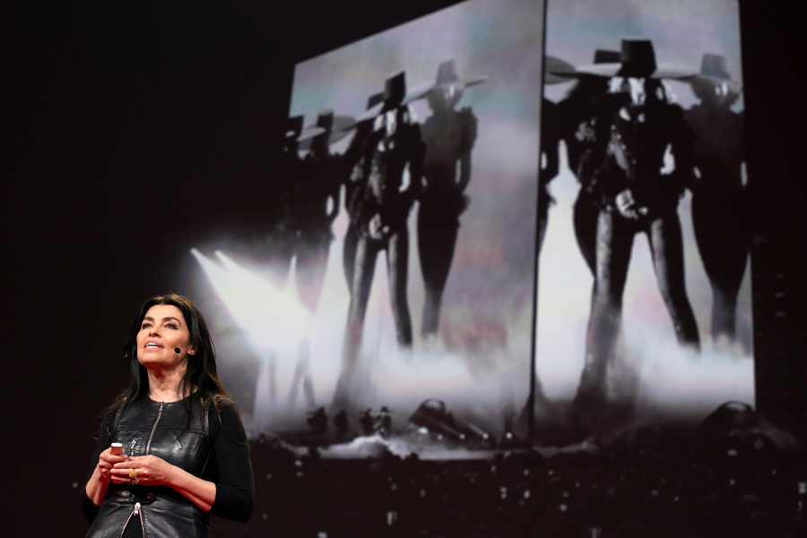

A cenografista favorita de todos os tempos!
Sua história
A artista e designer Es Devlin juntou-se recentemente ao TED2019 para falar sobre suas icônicas esculturas de palco e os próximos trabalhos para a Expo 2020 Dubai. Tendo desenvolvido obras para Beyoncé, Adele, Kanye West, U2, entre outros, Devlin é conhecida por criar esculturas performáticas de grande escala e ambientes que fundem música, linguagem e luz. Seu TED Talk apresenta sua jornada profissional e processo criativo.
Es teve contato com a arte desde pequena. Adolescente, viajava do interior à Londres de trem para aulas de violino na Royal Academy. Começou a trabalhar fazendo cenografias experimentais para pequenos teatros de Londres e foi uma das primeiras pessoas a usar projeção de filme em peças. Em 20 anos de trabalho, já criou para grandes casas de espetáculos como La Scala e Royal Opera House, e foi ela também quem assinou a cerimônia de encerramento da Olimpíada de Londres. No Brasil, ela integrou o time que concebeu a abertura dos Jogos Olímpicos do Rio e também assinou o projeto da passarela do desfile da Louis Vuitton no Rio. Por seu trabalho, foi agraciada com o OBE (Order of the British Empire).
Devlin tem mais de duas décadas de experiência com projetos cenográficos para óperas, teatro e dança em todo o mundo. Ela conta com uma pequena equipe de designers no Studio Es Devlin, que a ajuda a desenvolver e executar os trabalhos de cenografia. Devlin foi tema de um dos episódios da série de documentários Netflix, Abstract: The Art Of Design, e foi nomeada diretora artística da Bienal de Design London 2020. Já foi premiada com a London Design Medal, com o Olivier Awards e uma bolsa da UAL.


Autora: Adrielly Gomes Desenvolvedora Front End Link para GitHub.